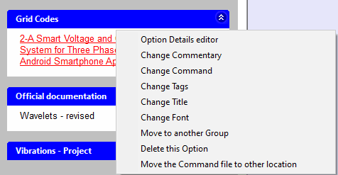
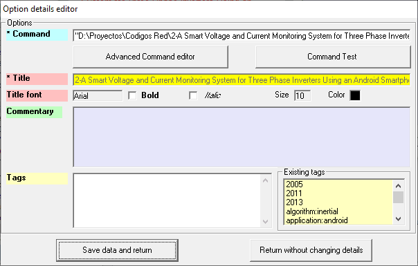
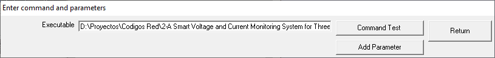
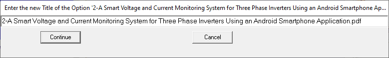
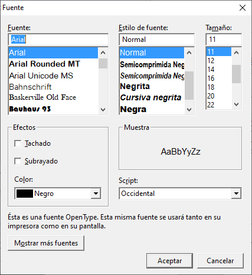
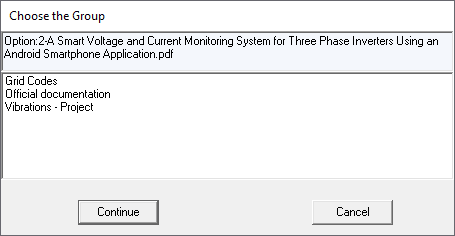
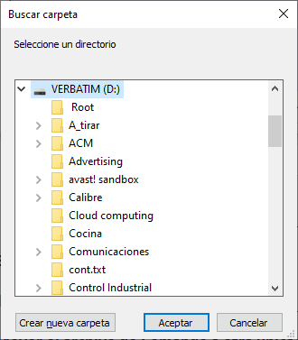

- Creating Options.
- Editing Option details.
The different options for changing the properties of an Option are described below.
In Standard View and by pressing the right mouse button when it is on the Option to edit, the following menu is displayed:

The different functionalities accessible through this menu are described below.
- Option Details editor
This option presents the Combined Editor of Groups and Options, filled in with the properties of the selected Option. This section describes the functions available in this Editor.

- Change Commentary. The comment is an HTML text. The section Editing Comments describes the available functionalities that help editing this text.
- Change Command.
The Command refers to the file, URL or application associated with the Option, which is executed when double-clicking on it. That is, it presents the indicated document using the application associated with its extension ("* .ext") (for documents), or it opens an Internet browser window with the URL (case of URLs), or run the application with the parameters specified it in the Command (in the case of applications).
This menu option presents the following form, where you can change the document to open, or the desired application, including the specification of the parameters you need.
This menu option presents the following form, where you can change:
- The documento to open.
- A URL to open.
- The location of the application to execute, followed by the desired parameters. The section Adding parameters to a Command describes the functionalities for entering new parameters.

- Change Tags. See Editing Tags for a description of available functions.
- Change Title. This option allows you to change the Title that is presented in the Option, through the form shown in the following figure:

- Change Font. This menu option is used to highlight a certain Option, changing the style of its Title: its Font, Style, Size, Effects and Color of the Option Title. It presents the "Font form" in your PC.

- Move to another Group.
This menu option presents the following form, where you can choose a Group, to which the selected Option will move.

- Delete this Option.
To delete the selected Option.
- Move the Command file to other location.
This menu option allows you to change the location of the document associated with the Option. This menu option allows you to change the location of the document associated with the Option, presenting the form below to choose the new location.

NOTE: When you want to change the location of the file referred to in an Option, you MUST USE THIS FUNCTIONALITY, since, if you do it manually, the Option will stop executing its functionality when double-clicking on it.
This functionality is equivalent to manually moving the reference file and changing the "Command" of the Option to point to the new location.